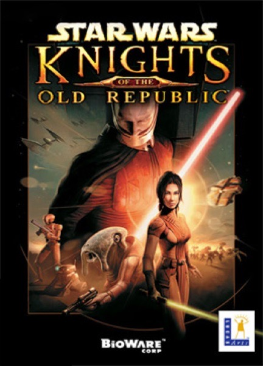

RPG · 2003
Star Wars: Knights of the Old Republic
A twist that retroactively reframes forty hours of your own choices.

Cover: Wikipedia: Star Wars: Knights of the Old Republic (video game)
Facts
- Released
- 2003-01-01
- Genre
- RPG
- Category
- RPG
- Platforms
- Mobile, Nintendo, PC, Xbox
- Developers
- BioWare
- Publishers
- Lucasfilm Games